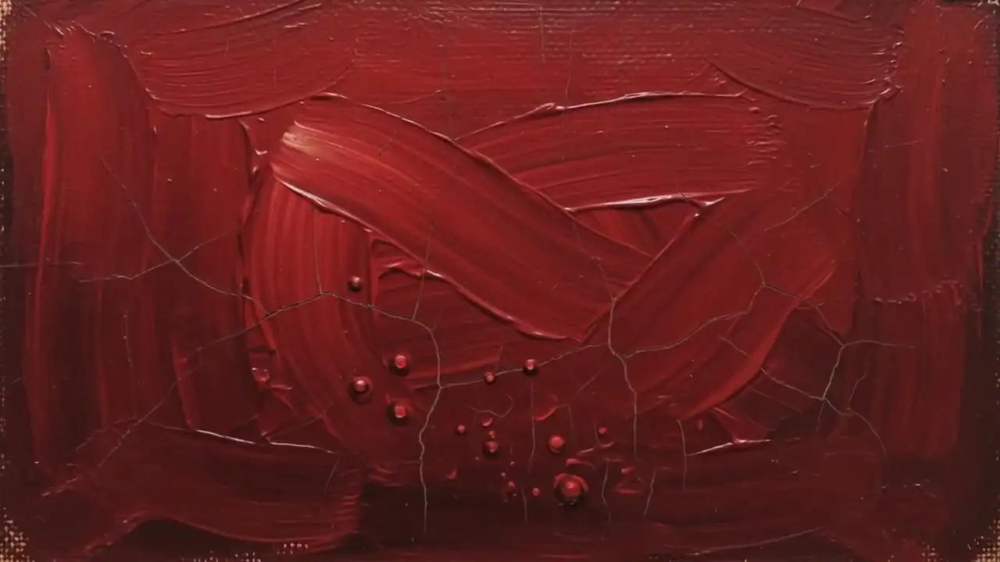
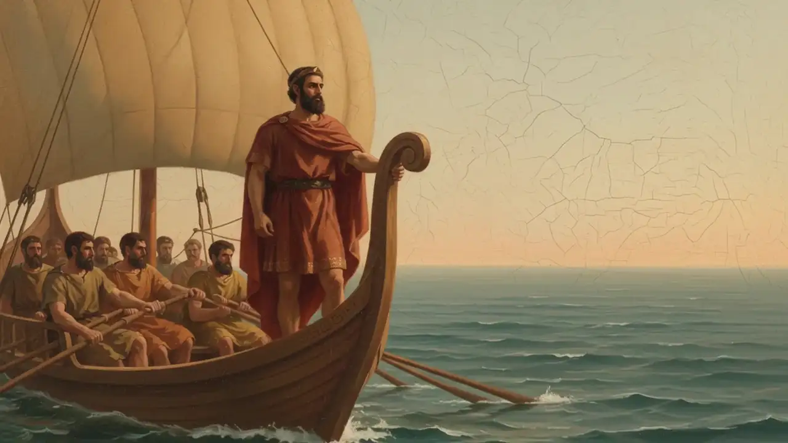
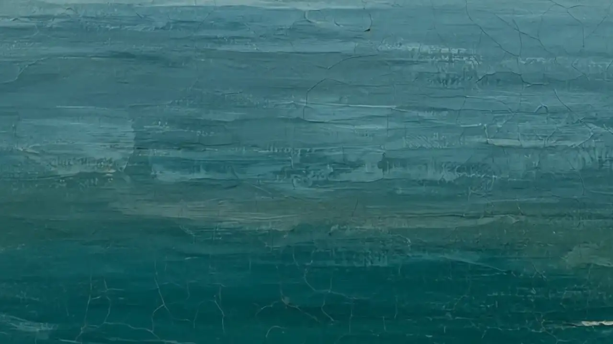
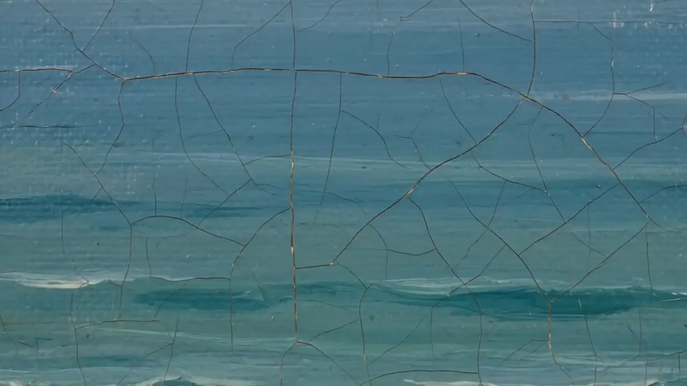
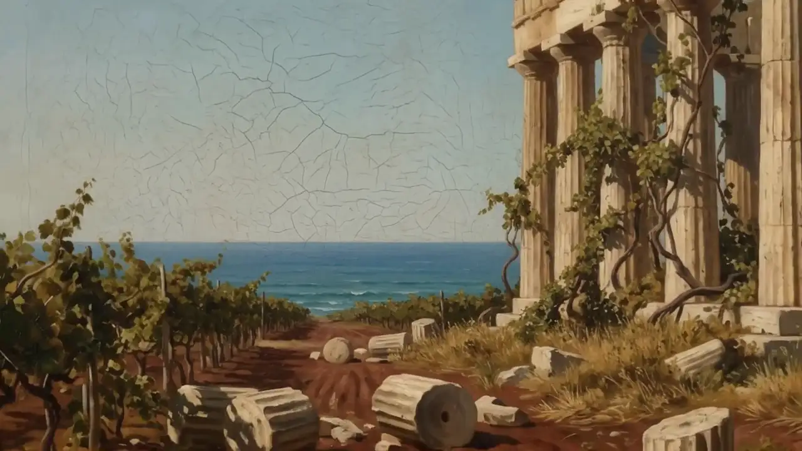
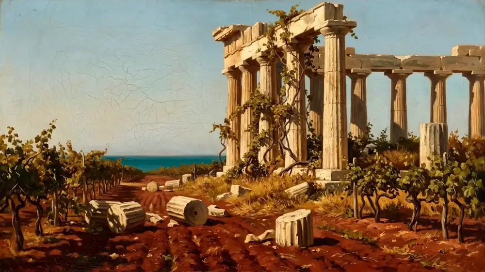
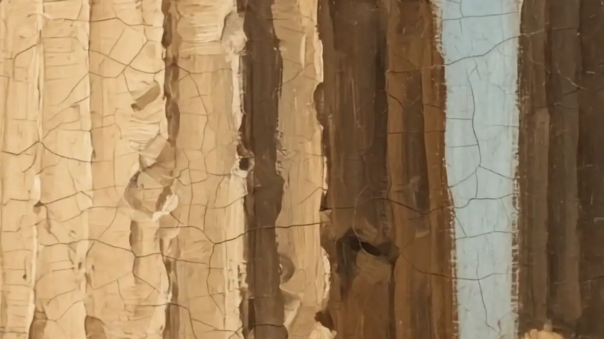
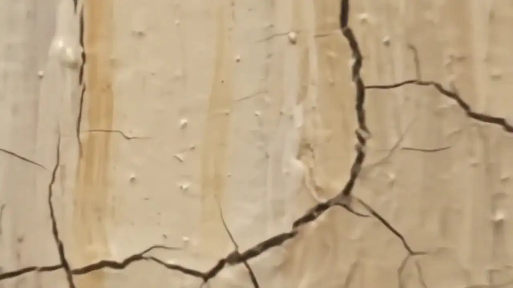

Œnotria · specifica transizioni · dati/tagli.json
Motion+
Easing unico · cubic-bezier(0.22, 1, 0.36, 1)
Demo in loop · ~3s per ciclo


Α´
Spazzata inclinata · mode 11 · at 3.2%
15→1a · wipe inclinato · slant 0.42 · w 0.020


Β´
Iride · mode 12 · at 25.3%
1c→2 · iride: il mare si apre sul tempio · anello rgb(48,102,109) · w 0.026


Γ´
Spazzata bombata · mode 14 · at 30.8%
2→3 · wipe con arco, da sinistra · fronte ad arco sin · w 0.022


Δ´
Tenda opaca · mode 13 · at 36.4%
3→3a4 · tenda opaca, colore della colonna rgb(128,120,104) · w 0.024
Ε´
Dissolvenza a colore · proposta motion+
grana via repeating-conic-gradient · per le giunzioni oltre 0.40
mode 12 · col 0.188 / 0.400 / 0.427 → rgb(48,102,109)
mode 13 · col 0.502 / 0.471 / 0.408 → rgb(128,120,104)
cubic-bezier
(0.22, 1, 0.36, 1)